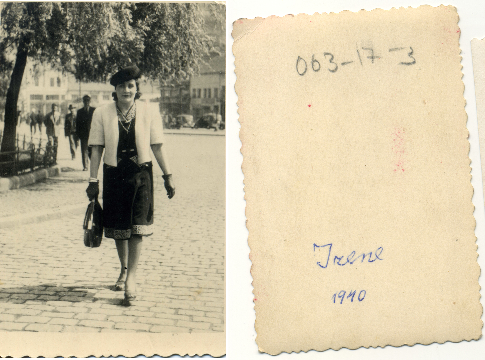
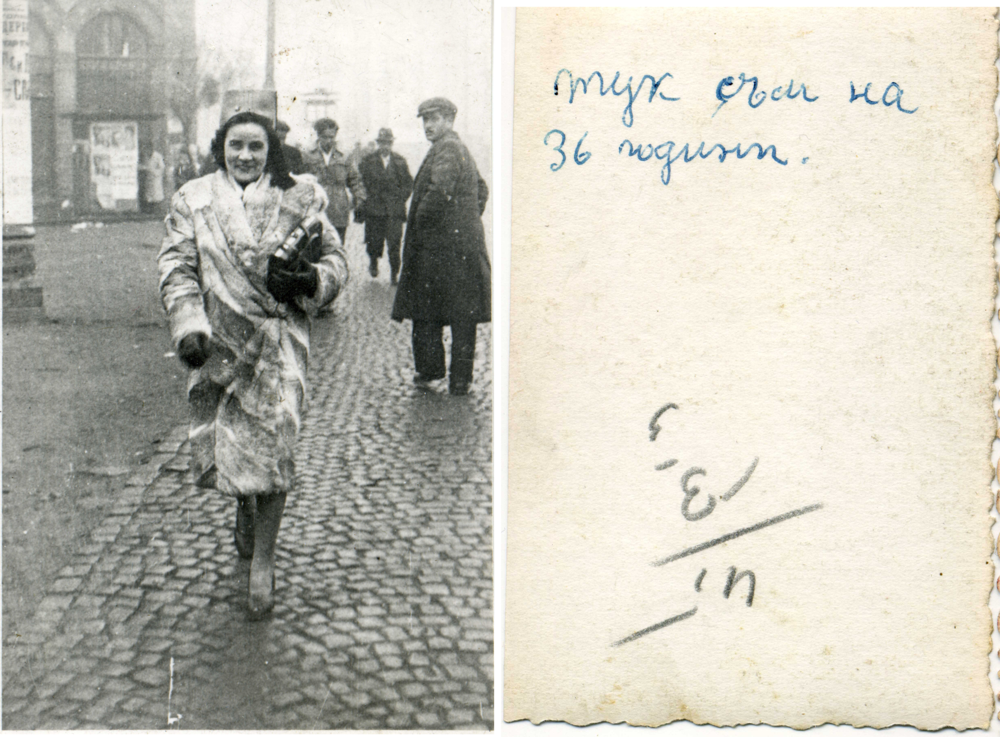
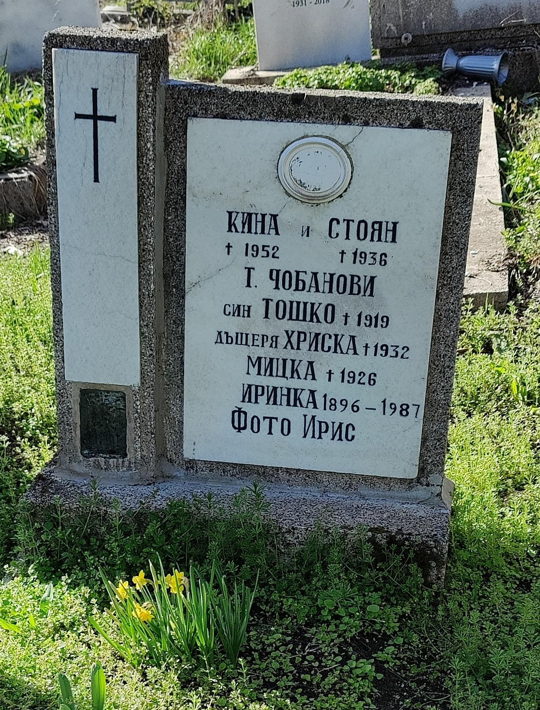

БиографияBiography
Животът зад обективаA Life Behind the Lens
Иринка Чобанова е родена през 1896 г. в Лом. Още като тийнейджърка показва интерес към фотографията и започва чиракуване във фотоателие във Варна около 1909 г. По-късно отваря собственото си ателие „Фото Добруджа", а след това се установява в София, където работи до края на живота си.
Irinka Chobanova was born in 1896 in Lom, Bulgaria. As a teenager, she showed interest in photography and began an apprenticeship at a photo studio in Varna around 1909. She later opened her own studio "Photo Dobrudzha" before settling in Sofia, where she worked until the end of her life.
Тя работи с голямоформатна германска камера, използвайки стъклени негативи. Нейните портрети са известни с вниманието към детайла, топлотата и достойнството, което предава на всеки обект.
She worked with a German large-format camera using glass plate negatives. Her portraits are known for their attention to detail, warmth, and the dignity she conveyed in every subject.
 Иринка в ателието, ~1965
Irinka in her studio, ~1965
Иринка в ателието, ~1965
Irinka in her studio, ~1965
ХронологияTimeline
Осем десетилетия занаятEight Decades of Craft
Родена в Лом, БългарияBorn in Lom, Bulgaria
Започва чиракуване във фотоателие във ВарнаBegins apprenticeship at a photo studio in Varna
Отваря „Фото Добруджа"Opens "Photo Dobrudzha" studio
Премества се в София, ателие на бул. „Царица Йоанна" №20Moves to Sofia; studio at Tsaritsa Yoanna Blvd. No. 20
Арестувана и затворена за краткоArrested and briefly imprisoned
Бул. „Царица Йоанна" става „Сталин", после „Витоша"Boulevard renamed: Tsaritsa Yoanna → Stalin → Vitosha
Последна снимка с камератаFinal photograph taken with her camera
Почива в София на 91 годиниPasses away in Sofia at age 91
ПортретиPortraits
Иринка през годинитеIrinka Through the Years



СемействотоThe Family
Надписано с нейна ръкаWritten in Her Own Hand
Иринка пази спомени за семейството си чрез снимки и бележки. Тези документи разкриват личната ѝ страна зад професионалния обектив.
Irinka preserved memories of her family through photographs and handwritten notes. These documents reveal the personal side behind her professional lens.
НаследствоLegacy
56 години пред обектива на историята56 Years Before the Lens of History
Работата на Иринка Чобанова е ценен прозорец към българската история през XX век. Нейните снимки документират не само лица, но и епоха — с достойнство, топлота и майсторство.
Irinka Chobanova's work is a valuable window into 20th-century Bulgarian history. Her photographs document not just faces, but an era — with dignity, warmth, and masterful craft.